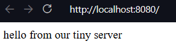
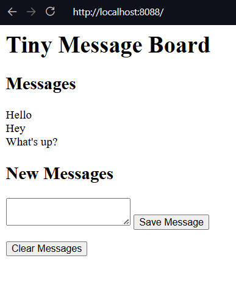

Open your browser and connect: http://localhost:8080Chapter 15: Python Programs as Network Servers
Notes
Create a Web Server in Python
- The web works via socket connections as seen in Chapter 14
- Consider a browser
- The browser sends a request to server
- The server receives this on a socket connection
- Send’s back the request response
- We previously saw that web pages are formatted in HTML and the process of requesting a webpage is governed by HTTP
- We’ll examine how these communication processes work through creating a small web server
A Tiny Socket-based Server
The below program provides a basic socket connection
You should be able to navigate to, and request the page via a browser
A tiny webpage should be seen
""" Example 15.1 Tiny Web Socket Server A very basic web server implementation """ import socket host_ip = "localhost" host_socket = 8080 full_address = "http://{0}:{1}".format(host_ip, host_socket) #setup our url print("Open your browser and connect to: ", full_address) listen_socket = socket.socket(socket.AF_INET, socket.SOCK_STREAM) listen_address = (host_ip, host_socket) #set up the socket and address listen_socket.bind(listen_address) #bind the server to listen listen_socket.listen() connection, address = listen_socket.accept() print("Got connection from: ", address) # accept an incoming request network_message = connection.recv(1024) request_string = network_message.decode() #receive the request print(request_string) #display it #build a response status_string = "HTTP/1.1 200 OK" header_string = """Content-Type: text/html; charset=UTF-8 Connection: close """ content_string = """<html> <body> <p>hello from our tiny server</p> </body> </html> """ # send the response response_string = status_string + header_string + content_string response_byte = response_string.encode() connection.send(response_byte) # terminate the connection connection.close()
Make Something Happen: Connect to a Simple Server
Use the socket server example to explore how the web works. Open the program and work through the following activity
When the program is run, it will display the web server’s host address, you should see
Opening the browser and connecting to the address should show a basic webpage

The terminal should now show the output containing the contents of the request
Got connection from: ('127.0.0.1', 36172)
GET / HTTP/1.1
Host: localhost:8080
Connection: keep-alive
Upgrade-Insecure-Requests: 1
User-Agent: Mozilla/5.0 (Windows NT 10.0; Win64; x64) AppleWebKit/537.36 (KHTML, like Gecko) Code/1.110.0 Chrome/142.0.7444.265 Electron/39.6.0 Safari/537.36
Accept: text/html,application/xhtml+xml,application/xml;q=0.9,image/avif,image/webp,image/apng,*/*;q=0.8,application/signed-exchange;v=b3;q=0.7
Sec-Fetch-Site: none
Sec-Fetch-Mode: navigate
Sec-Fetch-User: ?1
Sec-Fetch-Dest: document
Accept-Encoding: gzip, deflate, br, zstd
Accept-Language: en-USThe first word of the actual request is the GET. This tells the server that the connection is requesting a webpage. The rest of the block provides information to the server that tells it what kind of responses the browser can accept
Code Analysis: Web Server Program
Let’s work through the following questions to make sure we understand the above example
Previous sockets that we created have used a socket type of
socket.SOCK_DGRAM. Why is this program usingsocket.SOCK_STREAM?The previous programs used the UDP protocol. There was no expectation of a conversation over the network, we just sent datagrams into the void that may or may not have been received. If we want to be able to confirm that messages have been received we have to form connections using TCP. This guarantees that a message is received, to indicate that we want the socket to be a connection is to use
socket.SOCK_STREAMWhat are the
status_string,header_string, andcontent_stringvariables in the program used for?HTTP defines how servers and browsers interact. The browser sends a
GETcommand to ask the server for a webpage. The server sends three items as part of a response.- A status response
- A successful return is indicated by
200 - If a page is not found then a
404is returned
- A successful return is indicated by
- A header string
- Gives the browser information about the response
- In our example
header_stringtells the browser to expect UTF-8 encoded html text, and that the connection will be be closed on receipt of message
- The content string
- An HTML document describing the webpage to be displayed
- A status response
What are the
encodeanddecodemethods used for?encodetakes a string of text and converts that to a block of bytes for transmission over the network.encodeis a method available on strings. We use this to encode the response string that the server sends to the browserresponse_bytes = response_string.encode()The bytes type then provides a method
decodethat returns the contents of the bytes as a text string. The program uses this method to decode the command that the server receives from the browserrequest_string = network_message.decode()The
network_messagecontains the bytes received over the network, we then convert this into a string. Our basic server always provides the same response. A more advanced program could use the request string to decide which page to serve the browserCould browser clients connect to this server via the internet?
We could if this computer was directly connected to the internet. However, this is likely not true. The computer likely lives on a local network, which connects to the internet via a router. All machines connected on the same local network could potentially connect to the server, but you would need to configure the router to allow your computer to serve messages to the internet. Typically this is not enabled because it can make your computer vulnerable to malicious systems
How does the statement that gets the connection work?
The following statement gets the connection to a socket
connection, address = listen_socket.accept()This function returns a tuple (See the discussion in Chapter 8) holding the connection object and the address. The
connectionis analogous to a file object, it has methods we can call to read messages from the other end of the connection. We can also all methods to send messagesHow could I make the sample program above into a proper web server?
You would have to wrap the code that serves a webpage in a loop. Once a request has been dealt with the program would then return to a waiting state to receive future connection requests. A full web server would be able to accept multiple connections at the same time. We can make a socket that can accept multiple connections, and python also supports threads that allow multiple simultaneous lines of effort to run on a computer at the same time. However creating a full web server is complicated, and we can utilise existing standard library support
Python Web Server
- A web server is a program that uses a network to listen for requests from clients
- We could expand our tiny server into a more complete server
- However python provides the builtin
httpmodule which contains a web server
- However python provides the builtin
HTTPserverlets us create objects that will accept connections on a network socket and dispatch them to a class- The class can then decode and act on them
BaseHTTPRequestHandlerprovides the base implementation of a handler for incoming web requests- We can use the
HTTPserverandBaseHTTPRequestHandlerto create a web server- Can then connect to it with with our browser as before
- This server does not stop after one request but runs a loop
- Continues to accept connections and serve out requests until the program stops
""" Example 15.2 Python Web Server A small python web server implementation using the html library """ import http.server class WebServerHandler(http.server.BaseHTTPRequestHandler): """ A basic example Web Server Handler to accept and serve requests """ def do_GET(self): """ Respond to a `GET` request This method is called when the server receives a GET request from the client. It sends back a fixed message back to the client """ self.send_response(200) self.send_header("Content-type", "text/html") self.end_headers() message_text = """<html> <body> <p>hello from the Python server</p> </body> </html> """ message_bytes = message_text.encode() self.wfile.write(message_bytes) return host_socket = 8080 host_ip = "localhost" host_address = (host_ip, host_socket) my_server = http.server.HTTPServer(host_address, WebServerHandler) print("Starting server of http://{0}:{1}".format(host_ip, host_socket)) my_server.serve_forever()
Code Analysis: Python Server Program
Work through the following questions to understand the above example
How does this work?
The
HTTPServerclass is the dispatcher for incoming requests. When we create it we pass it aWebServerHandler. This can be thought of as the template for how to respond. When a request comes in, the server creates anWebServerHandlerand passes the details of the request. The Server then sees that the request is aGETrequest and forwards that on to thedo_GETmethod of the handlerWhat does the
WebServerHandlerclass do?The
WebServerHandlerclass is a subclass ofBaseHTTPRequestHandler. A subclass of a superclass inherits all of its attributes. OurWebServerHandlercontains one attribute which is thedo_GETmethod. Thedo_GETmethod runs when a browser tries to get a webpage from our server. Thedo_GETmethod returns the webpage requested by the browser. Changing thedo_GETmethod lets us change how our server responds toGETrequestsHow does the server program send the page back to the host?
The host connection acts like a file connection. When the
WebServerHandlerinstance is created, it is given an attribute calledwfilewhich is the write file for this web request. Thedo_GETmethod can use thewfileattribute to write back to the message serverself.wfile.write(message_bytes)message_bytesis the message the server is returning. By just using an arbitrary file as a write source means that we can send many different types of binary dataHow is the
WebServerHandlerclass disconnected to the server?When we create a server we pass the server a reference to the class that it will use to respond to incoming web requests
my_server = http.server.HTTPServer(host_address, WebServerHandler)We can see that the
WebServerHandleris passed as an argument to the web server. When a request is received, the created instance ofWebServerHandlerthen calls methods to handle the request
Serve Webpages from Files
- A single web server can send out many pages
- A Uniform Resource Locator or URL identifies destinations
- Includes a path to the resource that will be provided
block-beta
columns 7
classDef BG stroke:transparent, fill:transparent
space
space
title["Breakdown of a URL"]:3
space
space
class title BG
block:Protocol
columns 1
protocol["http:"]
protocolDescr["protocol name"]
end
class protocol BG
class protocolDescr BG
block:DoubleSlash
columns 1
slash["//"]
slashDescr[" "]
end
class slash BG
class slashDescr BG
block:Host
columns 1
host["host"]
hostDescr["address of\nserver"]
end
class host BG
class hostDescr BG
block:Optional
columns 2
block:Colon
columns 1
colon[":"]
colonDescr[" "]
end
block:Port
columns 1
port["port"]
portDescr[" "]
end
optional["May be omitted,\nin which case\nport 80 is used"]:2
end
class colon BG
class colonDescr BG
class port BG
class portDescr BG
class optional BG
block:SingleSlash
columns 1
singleslash["/"]
singleslashDescr[" "]
end
class singleslash BG
class singleslashDescr BG
block:Path
columns 1
path["path"]
pathDescr["path to resource to be returned"]
end
class path BG
class pathDescr BG
An example url is shown below,
block-beta columns 5 protocol["http:"] doubleSlash["//"] host["www.w3.org"] singleSlash["/"] path["TR/WD-html40-970917/htmlweb.html"]
This provides the file
htmlweb.htmlin the folderWD-html40-970917which itself is in the folderTRObserve that we do not specify the port
- Default \(80\) is assumed
- \(80\) is the port associated with the web
- \(8080\) is associated with web servers on a local machine
A server can extract the path from a
GETrequest- Can then send back that resource
If a path is left out, a site sends back the home page
Below is a file-serving server
class WebServerHandler(http.server.BaseHTTPRequestHandler): """ A simple web handler that can serve pages in response to a `GET` request """ def do_GET(self): """ Handle a `GET` request This method is called when the server receives a `GET` request from the client. It opens a file with the requested path and sends back the contents """ self.send_response(200) self.send_header("Content-type", "text/html") self.end_headers() file_path = self.path[1:] with open(file_path, "r") as input_file: message_text = input_file.read() message_bytes = message_text.encode() self.wfile.write(message_bytes) return
Extract Slices from a Collection
- The above code uses slicing
- You see me previously use this in one of the exercises
block-beta
columns 6
classDef BG stroke:transparent, fill:transparent
space
title["Breakdown of a Slice"]:4
space
class title BG
block:Collection
columns 1
collection["collection"]
collectionDescr["collection to be sliced"]
end
class collection BG
class collectionDescr BG
block:openBracket
columns 1
openbracket["["]
openbracketDescr[" "]
end
class openbracket BG
class openbracketDescr BG
block:Start
columns 1
start["start"]
startDescr["start of slice"]
end
class start BG
class startDescr BG
block:Optional
columns 1
colon[":"]
colonDescr[" "]
end
class colon BG
class colonDescr BG
block:End
columns 1
end_block["]"]
endDescr[" "]
end
class end_block BG
class endDescr BG
Start and stop are written in square brackets separated by a colon
"Robert"[0:3]'Rob'The terminating character is not included in the slice
"Robert"[1:2 ]'o'Omitting the start, implicitly slices from the start of the collection
"Robert"[:3]'Rob'If the end is omitted, implicitly slices to the end of the collection
"Robert"[3:]'ert'You can use negative indices for slices
Negative indices slice from the end of the collection
"Robert"[-2:-1]'r'- The above slices from the the second last character through to the last character
Slicing can be used on any python collection
A slice doesn’t impact the original item
The program above uses slicing to remove a leading
/on thepathattribute
Make Something Happen: Connect to a File Server
We can use the web server to browse a small website. Open and run the example program PythonFileServer.py. There are two html files in the same directory (index.html and page.html). Work through the following steps to understand how it works
Connect to the website
The website should be running on http://localhost:8080/index.html
You should see the rendered index page, which contains some basic text and a link to another page
<html> <body> <p> This is the index page for our tiny site.</p> <a href="page.html">This is another page</a> </body> </html>
Navigate the page
Click on the link and the browser should load the second page
<html> <body> <p>This is another page in our tiny web site.</p> <a href="index.html">This takes us back to the index</a> </body> </html>Click on the link on the new page and you should return to the original first page
Nothing restricts a web server to just serving HTML files
We could extend the web server to serve out image files etc.
A good idea is to also include the case when a requested file does not exist
Python provides the
SimpleHTTPRequestHandlerto serve out filesBelow demonstrates using this inbuilt class (see FullPythonServer.py)
This program is basically the same but also contains a link on
page.htmlthat takes us to a picture. The server is still able to serve this image
Get Information from Web Users
So far our programs have only sent information to a client
We would like to the client to be able to send information to our program
We’ll create a very primitive message board program

The basic message board with some messages
Make Something Happen: Use a Message Board
Find the example MessageBoard.py. Start the server and then navigate to the exposed url. It should be http:/localhost:8080/index.html
You should see the user interface demonstrated above. Enter a new message into the text box and then save it using the Save Message button. The page should refresh with your new message now visible. Any subsequent messages should appear after the first. Press the Clear Messages button and you should see the messages all disappear
The HTTP POST Request
We’ve previously only worked with HTTP
GETrequestsThese request resources from a server
A counterpart is the
POSTrequest- Here the browser is sending some information to the server
<form method="post"> <textarea name="message"></textarea> <button id="save" type="submit">Save Message</button> </form>The above creates the HTML elements for submitting a new message
We can see that we create a
formelement which has amethodgiven the value"post"- This tells the browser that the form should send a post request when the form is submitted
The form has two elements
- A
textareacalled message- It’s contents are sent on submission
- a
buttoncalledsave- The
buttonhas thetype"submit"to denote that it submits the form
- The
- When the button is pressed the form is submitted
- A
To handle a
POSTrequest, we need ado_POSTmethod in our HTTP Handlerdef do_POST(self): """ Handle a `POST` request Returns ------- None """ length = int(self.headers["Content-Length"]) post_body_bytes = self.rfile.read(length) post_body_text = post_body_bytes.decode() query_strings = urllib.parse.parse_qs(post_body_text, keep_blank_values=True) if "clear" in query_strings: messages.clear() elif "message" in query_strings: message = query_strings["message"][0] messages.append(message) self.send_response(200) self.send_header("Content-type", "text/html") self.end_headers() message_text = self.make_page() message_bytes = message_text.encode() self.wfile.write(message_bytes)
Code Analysis: POST Handler
Let’s work through the do_POST handler method from before. It’s not long but it takes a little bit of understanding. Recall that it is invoked after the client has decided to save message whose contents are in a text box. The browser has sent that to us as a POST request. Work through the following questions
How does
do_POSTread the information sent by the browser?The message is read via the file connection
We first determine the size of the file by reading
Content-Lengthlength = int(self.headers["Content-Length"])headers are provided in
WebServerHandler(viaBaseHTTPRequestHandler) as a dictionary calledheadersheaders can then be loaded by name
We then use this to read from the read file (
rfile)post_body_bytes = self.rfile.read(length)This gives us the raw bytes, which then need to be converted into text
post_body_text = post_body_bytes.decode()The resulting text is represented as a query string
- This is the HTTP method for encoding named items
- Items have the key-value form
name=item
For our form we have the name of the text area and it’s content
message=content
We can use
urllibto parse query stringsquery_strings = urllib.parse.parse_qs(post_body_text, keep_blank_values=True)parse_qsmethod converts the query string into a dictionaryThe
keep_blank_valuesparameter tells the parser to add blank query string values to the dictionary- Useful for the
clearbutton
- Useful for the
We can then extract the content with a key-value lookup
message = query_strings["message"][0]parse_qscreates a list of content for all the namesSince we only want one message, we just take the first element
This gives us the message content that we can then add to our list of messages
messages.append(message)messagesis a global list containing each of the entered messagesmake_pageuses the contents ofmessagesto create a webpage which is then served back to the browser
How does the
do_POSTmethod generate the webpage that contains the messages the user entered?do_POSTextracts the message from thePOSTrequest and adds it to the list of messagesmake_pageis then called to generate the expected webpage- This webpage is then served back to the browser
A server must send a webpage as a response to a
POSTcommandThis could be an acknowledgement or update the page contents
Here we need to redraw the page with the new message
We define a method
make_pagethat encapsulates making this pagedef make_page(self): """ Generates the HTML page for a message board containing all messages Returns ------- str the webpage as an html string """ all_messages = "<br>\n".join(messages) page = """<html> <body> <h1>Tiny Message Board</h1> <h2>Messages</h2> <p> {0} </p> <h2>New Messages</h2> <form method="post"> <textarea name="message"></textarea> <button id="save" type="submit">Save Message</button> </form> <form method="post"> <button name="clear" type="submit">Clear Messages</button> </form> </body> </html>""" return page.format(all_messages)
Code Analysis: Make a Webpage from Python
A web server can send the contents of a file back to the browser client. We’ve also seen that we can send raw html as a text string. There’s nothing that then prevents us writing an entire page as a HTML string and sending that back. The make_page method does this, to display all the messages to the user.
Work through the following questions
How does this method create a list of messages?
- The HTML needs to define when to end a line to then display the next method
- The HTML command
<br>indicates a line break - We use
jointo convert the contents of themessageslist into an HTML list - Each message is separated by the
<br>HTML command
How does this method insert the message list into the HTML that describes the page?
- The method uses python’s string formatting
- We use a multi-line string to write out the static HTML template and indicate a format directive
{0}where the list of messages should go - We then use
formatto inject the joined string and return the final result
Finally need to implement a clear button to remove all messages
We can add a clear button
<form method="post"> <button name="clear" type="submit">Clear Messages</button> </form>In the
do_POSTmethod we then add code to distinguish between a new message and a clear messageif "clear" in query_strings: messages.clear() elif "message" in query_strings: message = query_strings["message"][0] messages.append(message)inoperator returnsTrueif a key is in a dictionaryWe check if we have a
clearkey- Indicates the clear button was clicked
Else check if we have a
messagekey- Indicates that a new message was submitted
Exercise: Improve the Message Board
For the following exercise we’ll make the following improvements to the message board. First we’ll add data persistence, so that if the server goes down, messages can be reloaded. Second, we’ll add a timestamp to each message indicating when it was posted.
The full implementation is given in 01_PersistentMessageBoard
We implement persistence using the standard pickle approach,
datafile = "messages.pkl"
def load_messages(file):
"""
Load the messages database from a file
Parameters
----------
file : str
path to a file storing the messages database
Returns
-------
list[(message, time)]
A list of time-stamped messages
"""
try:
with open(datafile, "rb") as f:
messages = pickle.load(f)
except: # noqa: E722
print("Datafile missing, creating new log")
messages = []
return messages
def save_messages(file):
"""
Save the messages into the database
Parameters
----------
file : path
path to the file
Returns
-------
None
"""
with open(file, "wb") as f:
pickle.dump(messages, f)
messages = load_messages(datafile)We write load and save methods, define a datafile and then when the server starts up attempt to load from the data file. If it doesn’t exist we create a new message list. Save is also just a standard pickle dump.
However since this program is supposed to be always running the question is then when to implement the call to save. In theory we could do this when the program ends, but in theory it shouldn’t. It might end unexpectedly at which point there’s no guarantee the save would take place. So instead we want to save the state of the message list every time it gets updated.
Here are the changes in do_POST
if "clear" in query_strings:
messages.clear()
save_messages(datafile)
elif "message" in query_strings:
message = query_strings["message"][0]
messages.append((message, datetime.datetime.now()))
save_messages(datafile)Next we want to add a timestamp. You can already see from above that this is achieved by instead of just storing the message contents in the messages list we store a tuple. This tuple contains the contents and the current date and time.
When we want to return the page we then adjust our join to,
all_messages = "<br>\n".join(
map(lambda a: "Posted: {0}<br>\n{1}".format(a[1], a[0]), messages)
)We write a lambda that maps a message tuple (contents, time) to the form
Posted YYYY-MM-DD etc..
Message contentsWe then use map to apply the transform to all the elements of the messages list, then join as before to create one string that is embedded into the HTML template
Host Python Applications on the Web
- So far we’ve hosted our programs on our local machines
- In theory we could host our programs on computers connected to the internet
- Then anyone could use them
- There are much better techniques for making advanced web applications
- Once you’ve created a web app you then need to find a hosting service, common ones are
- Microsoft Azure
- Amazon Web Servers
Summary
- We’ve created python projects to serve web pages as web servers
- We’ve seen that the HTTP protocol specifies requests of different types
- GET requests indicate a client wants a resource
- POST requests are used to submit information to a client
- A server response contains
- A status code
- A header
- Message contents
- Python provides the
HTTPlibrary for supporting web servers- The
HTTPServerhelps us run a web server - The
BaseHTTPRequestHandlerhelps us write classes to handle web requests
- The
- We created a simple message board program
- Responds to
GETandPOSTrequests
- Responds to
Questions and Answers
Is this how webpages work?
- Yes
- However, modern browsers are more complicated and more featurefull
- Modern webpages can contain program code (typically JavaScript)
- This code interacts with the user and sends requests to a server
- Layout and appearance is controlled using style sheets that are acted on by a browser when a page loads
Can a server determine what kind of client program is reading the webpage?
- Yes
- The header identifies the browser type, the kind of computer and OS
- and more…
Can a web server have a conversation with a client?
- It is closer to a question
- The server is asked for something and provides a response
- Each question and answer is an individual transaction
- By default there is no maintained state
- Websites can use “cookies”
- Small pieces of data given by a web server and stored by a browser
- The server can then request a cookie to load some knowledge of state associated with a given cookie
- Example uses for cookies include
- Shopping Carts
- User identity
- Cookies can also be malicious especially as they are used for recording what people do on their personal devices including for the purposes of advertising
How can I make my website secure?
- Our webpages are insecure
- They send their responses and receive requests as plain text
- Anybody could read these messages
- Wireshark is an open source tool that lets you capture and view network messages
- Modern browsers encrypt the data they transfer
- This uses the
httpsprotocol - Connect via port \(443\) rather than \(80\)
- This uses the
- Using a framework such as the two shown earlier helps handle a lot of this complexity for you
- Including user authentication